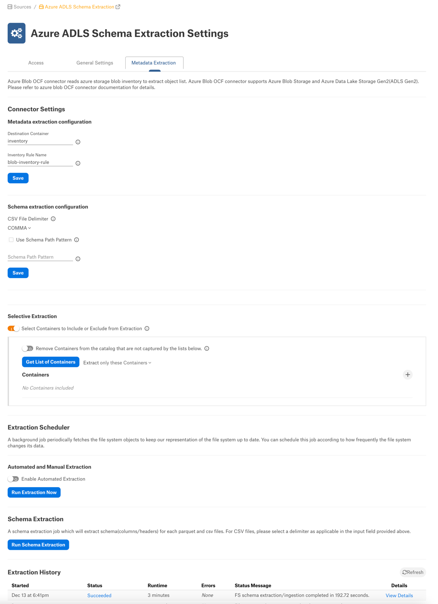
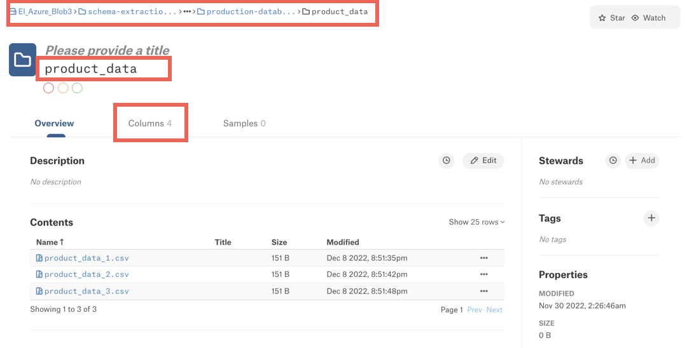
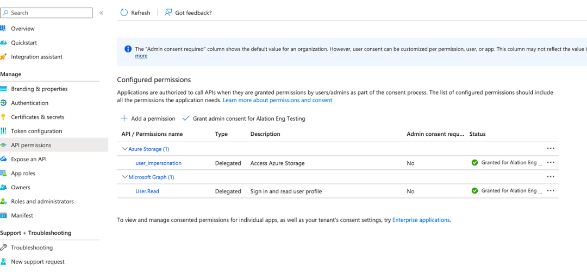

Azure Blob Storage OCF Connector: Install and Configure¶
Alation Cloud Service Applies to Alation Cloud Service instances of Alation
Customer Managed Applies to customer-managed instances of Alation
The OCF connector for Azure Blob Storage uses the blob inventory feature of Azure Storage. Alation reads the latest inventory report from a destination container and streams metadata to the catalog.
Required Information¶
The following information is required for configuring an Azure Blob Storage OCF file system source in Alation:
Name of the destination storage container that stores the Blob inventory. For details, see Configuration in Azure Portal.
Connection information—Azure Blob Storage OCF connector uses the standard Java SDK v12 to communicate with Azure. Alation Server Admin configuring extraction for an Azure Blob Storage file system source will need to know:
Storage account name
The authentication information—See Authentication.
Endpoint suffix—See Check Endpoints in Azure in Azure documentation.
If you are going to use sampling with OAuth, then Azure AD application information for configuring OAuth authentication in Alation. See Sampling with Azure OAuth Authentication.
Configuration in Azure Portal¶
Before adding your Azure Blob Storage file system source to Alation, perform the required configuration in Azure portal. You will need to create a destination container to store the inventory reports and an inventory rule for this container.
Create a Destination Container¶
A destination container should be a new and separate container within the storage account that does not contain any data files. It will serve as a destination to store the blob inventory for performing metadata extraction in Alation.
To create a destination container:
Under your storage account, create a container to be used as a destination container. Alation does not have specific requirements for the Public access level configuration or any of the fields under the Advanced properties. Select the values that are recommended by your organization’s policy or use the defaults.
Create Inventory Rule for Source Containers¶
Alation relies on Azure Storage blob inventory reports for metadata and schema extraction and sampling. Reports are generated based on inventory rules. An inventory rule provides a list of containers, blobs, blob versions, and snapshots in your storage account, along with their associated properties. It can generate an output report in either comma-separated values (CSV) or Apache Parquet format on a daily or weekly basis, depending on the configuration. Alation supports inventory reports in the CSV format only.
On the Blob inventory page under your storage account, create an inventory rule for source containers. Refer to Enable Azure Storage Blob Inventory Reports in Azure documentation for more information about the blob inventory feature and steps to create an inventory rule.
For the rule you create for Alation, use this information:
Container—Select the destination container you created for Alation.
Object type to inventory—Select Blob.
Blob types—Select Block blobs and Append blobs.
Blob inventory fields—See Fields in Inventory below.
Inventory frequency—Select Weekly or Daily if the data in the container updates frequently.
Export format—Select CSV.
Prefix match—Optionally, add a prefix match to filter blobs in your inventory report.
Note
The inventory report becomes available after a time period of up to 48 hours after the inventory rule is created or updated. When the inventory report has been delivered to your destination container, proceed with configuration on the Alation side.
Azure creates one directory per rule in the destination container. The directory structure will be similar to the following:
yyyy/MM/dd/HH-mm-ss/<rule_name>/<rule_name>-<file_name>.
For each inventory rule there will be three files:
<rule_name>-manifest.checksum
<rule_name>-manifest.json
<rule_name>.csv
When the connector receives an extraction request, it will collect the first level of folders <yyyy> from the destination container and sort them in reverse order. For each <yyyy> folder, it will search the next level of folder hierarchy and sort the folders in reverse order. This action will be repeated until we get to the folder structure for <HH-mm-ss>. Once the <HH-mm-ss> level is reached, the connector will search for the folder that matches the rule name specified in Alation as the inventory rule. When the rule name matches, the connector will extract metadata based on the most recent CSV file <rule_name>.csv.
Fields in Inventory¶
Refer to the table below for information about required and optional fields to include into an inventory report. The required fields must be included for extraction to succeed. You can include optional fields too to extract more metadata. If you do not include an optional field, then the corresponding metadata will not be available in Alation.
Azure Blob Storage |
ADLS Gen 2 Storage |
Is required? |
|---|---|---|
Name |
Name |
Yes |
Content length |
Content length |
No |
Last modified |
Last modified |
No |
Creation time |
Creation time |
No |
n/a |
HDI folder status |
Yes |
Authentication¶
For metadata and schema extraction, Alation supports authentication using a shared access signature token (default), Azure Service Principal, or the storage account access key.
Using Account Access Key¶
Refer to Use Account Access Key in Azure documentation for more information.
Using Azure Service Principal¶
Refer to Azure Service Principal Authentication for more information.
Configuration in Alation¶
Step 1: Install the Connector¶
Alation On-Prem¶
Important
Installation of OCF connectors requires Alation Connector Manager to be installed as a prerequisite.
To install an OCF connector:
If this has not been done on your instance, install the Alation Connector Manager: Install Alation Connector Manager.
Ensure that the OCF connector Zip file that you received from Alation is available on your local machine.
Install the connector on the Connectors Dashboard page using the steps in Manage Connectors.
Alation Cloud Service¶
Note
On Alation Service Cloud instances, Alation Connector Manager is available by default.
Ensure that the OCF connector Zip file that you received from Alation is available on your local machine.
Install the connector on the Connectors Dashboard page using the steps in Manage Connectors.
Step 2: Create and Configure a New File System Source¶
Adding a file system source requires the role of Server Admin.
Log in to Alation.
From the Apps menu on top right, select Sources. The Sources page will open.
On the upper right, click +Add and in the drop list that opens, click File System. The Add a File System page will open.
From the File System Type dropdown, select Azure Blob Storage OCF Connector.
Provide a Title for the file system source and, optionally, a Description, and click on Add File System. You will be navigated to the Settings page of your new file system source.
Access¶
On the Access tab, set the file system visibility as follows:
Public File System—The file system source will be visible to all users of the catalog.
Private File System—The file system source will be visible to users allowed access by File System Admins.
You can add more File System Admin users in the File System Admins section if required.
General Settings¶
Note
This section describes configuring settings for credentials and connection information stored in the Alation database. If your organization has configured Azure KeyVault or AWS Secrets Manager to hold such information, the user interface for the General Settings page will change to include the following icons to the right of most options:

{kind=link}
{kind=link}
{kind=link}
{kind=link}
{kind=link}
By default, the database icon is selected, as shown. In the vault case, instead of the actual credential information, you enter the ID of the secret. See Configure Secrets for OCF Connector Settings for details.
Perform the configuration on the General Settings tab.
Connector Settings¶
Under Connector Settings > File System Connection, specify the connection information. Click Save to save your values.
Parameter |
Description |
|---|---|
Storage Account Name |
Specify the name of the storage account. |
Auth Type |
Select OAuth Client Credential from the drop-down to use Azure Service Principal as the auth type. In the Authentication Profiles drop-down that appears, select the name of the authentication profile of the service principal. Note This field is available from connector version 2.4.1. Note This field is applicable only for Azure Service Principal auth type. |
Use Shared Access Signature (SAS) |
Select Use Shared Access Signature checkbox to authenticate using shared access signature (SAS). |
Access Key/Shared Access Signature |
Specify the access key or shared access signature if the Use Shared Access Signature checkbox is selected. |
Storage Endpoint Suffix |
Specify the Storage Endpoint Suffix corresponding to your
Azure cloud account region. The default value is
|
Storage Endpoint Suffix¶
In Azure Portal, on the storage account page, scroll the left-hand menu down to Settings > Endpoints. On the Endpoints page, look for Primary Endpoint for your account type. You will find the full blob service URL, for example https://alationdemoadlsgen2.blob.core.windows.net. The suffix comes after blob..
{kind=link}
In your file system source settings in Alation, under Connector Settings, you provide the Storage Account Name. In the URL example above, it’s alationdemoadlsgen2. Alation will append “.blob.” and then the Storage Endpoint Suffix to complete the URL.
Logging Configuration¶
From the Log Level dropdown list, select the log level to generate logs. Click Save to save your choice.
The available log levels are based on the Log4j framework.
Test Connection¶
Under Test Connection, click Test to validate network connectivity to Azure.
Deleting the Data Source¶
You can delete your data source from the General Settings tab. Under Delete Data Source, click Delete to delete it.
{kind=link}
Metadata Extraction¶
Configure metadata extraction (MDE) on the Metadata Extraction tab of the Settings page. You can perform a full or selective extraction, followed by schema extraction for the files in the catalog.
Note
Before extracting metadata, ensure that you have performed the configuration on the Azure portal side. See Configuration in Azure Portal for more details.
To configure metadata extraction:
On the Metadata Extraction tab of the settings page, fill in the fields under Connector Settings > Metadata extraction configuration.
Parameter
Description
Destination Container
Required field. MDE will fail if it’s left empty.
Specify the name of the destination container that stores the inventory reports. More on the destination container: Create a Destination Container.
The destination container must contain the inventory report. MDE will fail if you run it before the inventory report is generated. The wait time may be 24 to 48 hours for the first inventory report to be generated after configuring the inventory function for an Azure storage account.
Inventory Rule Name
Required field. MDE will fail if it’s left empty.
Specify the inventory rule name.
Click Save to save the information you specified.
{kind=link}
You can perform full extraction or selective extraction.
Full Extraction¶
To perform full extraction, click Run Extraction Now under Automated and Manual Extraction. This will extract metadata from all containers present in the inventory report.
Selective Extraction¶
To perform selective extraction, perform the configuration under Selective Extraction:
Enable the toggle Select Containers to Include or Exclude from Extraction.
Click Get List of Containers to fetch the list of containers from your storage account. The status of this action will be logged in the Extraction Job Status table at the bottom of the Metadata Extraction tab.
When container synchronization is complete, the plus icon to the left of the Get List of Containers button will become enabled.
Click the plus icon and select containers to extract.
Check if you are using the correct extraction filter option. Available filter options are described below:
Filter Option
Description
Extract all containers except
Extract metadata from all containers except the selected containers.
Extract only these containers
Extract metadata only from the selected containers.
6. Click Run Extraction Now under Automated and Manual Extraction to extract metadata. The status of the extraction action is logged in the Job History table at the bottom of the page. Extraction time will depend on the volume of the metadata you are extracting. After completing metadata extraction, you can perform schema extraction for the data files you cataloged.
Schema Extraction¶
A schema extraction job will extract the schema (column headers) for CSV, TSV, PSV, and Parquet files you cataloged with metadata extraction.
Note
Schema extraction is first available with connector version 2.0.0.2863 and was improved in connector version 2.2.0.4373 (compatible with Alation version 2023.1).
Schema extraction should be performed after performing metadata extraction. The metadata extraction job extracts all or selected containers, the directory structure in those containers, and file information. Schema extraction will additionally extract column header information for extracted files.
Understanding Schema Extraction¶
A schema extraction job extracts the logical schema (column headers) either at the file level or at the parent directory level, depending on configuration.
Extracting the logical schema for every file can be time- and resource-consuming if the volume of extracted file metadata is large. In addition, extracting column headers for every file may not be the optimal approach if your data is partitioned and all files in directories have identical column composition.
For partitioned data, you can use a schema path pattern to extract and represent the logical schema of the files on the directory level.
Schema extraction is configured using the fields under the Schema extraction configuration section of the Metadata Extraction tab.
You can enable schema path patterns using the Use Schema Path Pattern checkbox.
By default, the Use Schema Path Pattern checkbox is clear, which means you are not using schema path patterns. When you run a schema extraction job without selecting the Use Schema Path Pattern checkbox, Alation will read each individual file in each directory that was previously extracted with metadata extraction and extract column headers for each individual file. This information will become available under the Columns tab on the catalog page of each file object.
When you select the Use Schema Path Pattern checkbox and specify a schema path pattern, Alation will use this pattern to find matching directories and assume that all files in the directories have identical column structure. The schema extraction job will only stream column headers from one file—the first file in the list of files in this directory in the inventory report. The column information will be displayed at the level of the schema path pattern directory and not at the file level.
Important
If you specify a schema path pattern that covers only some of the extracted directories, Alation will not extract column information at the file level for the files the parent directories of which are not covered by the schema path pattern you specified.
Refer to Schema Path Pattern for information on how to write schema path patterns.
Let’s look at an example. Let’s assume that we have the following metadata structure under a storage account that we want to catalog:
schema-extraction/CE/resourceset-usecase1 schema-extraction/CE/resourceset-usecase1/warehouse schema-extraction/CE/resourceset-usecase1/warehouse/production-database schema-extraction/CE/resourceset-usecase1/warehouse/production-database/sales_data schema-extraction/CE/resourceset-usecase1/warehouse/production-database/sales_data/file1.csv schema-extraction/CE/resourceset-usecase1/warehouse/production-database/sales_data/file2.csv schema-extraction/CE/resourceset-usecase1/warehouse/production-database/sales_data/file3.csv schema-extraction/CE/resourceset-usecase2 schema-extraction/CE/resourceset-usecase2/warehouse schema-extraction/CE/resourceset-usecase2/warehouse/production-database schema-extraction/CE/resourceset-usecase2/warehouse/production-database/product_data schema-extraction/CE/resourceset-usecase2/warehouse/production-database/product_data/product_data_1.csv schema-extraction/CE/resourceset-usecase2/warehouse/production-database/product_data/product_data_2.csv schema-extraction/CE/resourceset-usecase2/warehouse/production-database/product_data/product_data_3.csv schema-extraction/CE/resourceset-usecase2/warehouse/production-database/sales_data schema-extraction/CE/resourceset-usecase2/warehouse/production-database/sales_data/sales_data_1.csv schema-extraction/CE/resourceset-usecase2/warehouse/production-database/sales_data/sales_data_2.csv schema-extraction/CE/resourceset-usecase2/warehouse/production-database/sales_data/sales_data_3.csv
After we perform the first metadata extraction job, Alation will extract the containers, the directory structure in each extracted container, and data file information for each directory containing data files. It won’t extract column information for any of the files yet.
Next, we can extract schema information by running a schema extraction job. Our options are:
Enable the Schema Path Pattern feature and specify a schema path pattern—Alation will detect logical schemas using the schema path pattern and extract column header information on the level of parent directories. The column information will appear on the Columns tab for the directory the path to which matches the schema path pattern you specified in the settings.
Run a schema extraction job without enabling the Schema Path Pattern feature—Alation will read all extracted files and extract column information for each extracted file. The column information will appear on the Columns tab on the catalog page of each file object. This operation may be very resource-intensive if you have extracted a large volume of metadata.
Let’s assume we want to use a schema path pattern. The pattern for this specific example can be the following:
schema-extraction/CE/resourceset-usecase[0-9]/warehouse/production-database/(sales|product)_data)
This pattern configures Alation to detect schemas in directories with the names matching the expression of the pattern. After we run a schema extraction job based on this pattern, the column information will appear at the level of the directories listed below under the Column tab on the directory catalog page:

schema-extraction/CE/resourceset-usecase1/warehouse/production-database/sales_data
schema-extraction/CE/resourceset-usecase2/warehouse/production-database/product_data
schema-extraction/CE/resourceset-usecase2/warehouse/production-database/sales_data.
{kind=link}
The column information will not appear on catalog pages of the file objects:
{kind=link}
Perform Schema Extraction¶
To run a schema extraction job:
Configure the options under Schema extraction configuration. Save your values by clicking Save.
Parameter
Description
CSV File Delimiter
For CSV files, select a delimiter. The delimiter you select will apply to all extracted CSV files.
The default delimiter value is
COMMA.For TSV and PSV files, tab and pipe will be used as a delimiter respectively. You cannot change the delimiter for TSV and PSV files.
Use Schema Path Pattern
Select this checkbox to filter directories to be extracted as schemas. When you select this checkbox and specify a schema path pattern below, the schema extraction job will extract schema information at the directory level, for directories that match the pattern, without reading each individual file.
If you leave this checkbox clear and run a schema extraction job, Alation will extract column information for each extracted data file, analyzing each file. See Understanding Schema Extraction for more details.
Schema Path Pattern
If you have selected the Use Schema Path Pattern checkbox, also specify a schema path pattern. If you leave the Use Schema Path Pattern checkbox clear, this field will not apply.
Under Schema Extraction, click Run Schema Extraction. The schema extraction job will retrieve column header information which will become available on the Columns tab on catalog pages of directories or files, depending on your configuration. The status of the schema extraction job is logged in the Job History table at the bottom of the page.
Order of Extraction Jobs¶
The metadata you see under your Azure Blob Storage file system source depends on the order in which you run schema extraction jobs. If you run several schema extraction jobs with different settings, as a result, you may see column header data at different object hierarchy levels in the user interface. For example, if you run a schema extraction job without specifying a schema path pattern first, Alation will make the column header information available for every individual file you have extracted into the catalog. If you specify a schema path pattern next and rerun the schema extraction job, this time the column header information will be made available on the directory level, but it won’t be removed from the individual file level, and you will see it at both levels.
If you wish to remove the column header information from the individual file level, only leaving it at the directory level, you can do the following:
On the file system source settings page, open the Metadata Extraction tab.
Under Selective Extraction, enable the toggle Remove Containers from the catalog that are not captured by the lists below.
Under Schema extraction configuration, check your schema path pattern settings to ensure you have the desired configuration.
Rerun the schema extraction job by clicking Run Schema Extraction under Schema Extraction. This should remove the columns information from the individual file level and only leave it available under the directory level that is specified in the schema path pattern.
Schedule Metadata Extraction¶
If you wish to automatically update the metadata extracted into the catalog, under Automated and Manual Extraction, enable the Enable Automated Extraction toggle and select the day and and set a desired schedule. The next metadata extraction will be automatically run based on the schedule you set.
Note that schema extraction jobs cannot be scheduled and can only be run manually on demand.
Sampling¶
Note
Sampling is available with Azure Blob Storage OCF Connector version 2.0.0.2863 or newer and Alation version 2023.1.
File sampling is supported for CSV, TSV, PSV, and Parquet file formats. The files must end with .csv, .tsv, .psv, and .parquet. A .txt file that holds a TSV table will not have its schema extracted or be sampled.
File sampling is supported with Basic Authentication (access key or SAS token) or OAuth authentication.
Only dynamic sampling is supported. Each user performing sampling will need to authenticate against Azure to sample the files.
Sampling can be performed on the Samples tab of a directory or a file object. This depends on how the schema information was extracted: on the file or directory level.
Note
See Understanding Schema Extraction for details on configuration options for schema extraction.
Sampling with Basic Authentication¶
To perform sampling:
Open the catalog page of the file or directory you want to sample.
Note
Sampling is supported for CSV, TSV, PSV, and Parquet file formats.
Open the Samples tab.
Click Credential Settings.
{kind=link}
Click Select > Add New button.
Select Azure Basic Authentication from the Authentication Type dropdown. Provide Access Key or Shared Access Signature if the Use Shared Access Signature checkbox is selected.
Click Save.
Click Authenticate. You will be redirected to the catalog page.
Click the Run Sample button on the catalog page to see sampled data.
{kind=link}
{kind=link}
{kind=link}
{kind=link}
Sampling with Azure OAuth Authentication¶
For sampling, you can set up authentication with Azure AD using the OAuth 2.0 authentication protocol. To retrieve a sample, users will need to use their Azure AD credentials.
Required Permissions for Users¶
Service principals (users who are going to run sampling) must have at least the Storage Blob Data Reader permission.
A service principal must have this role even when it is the Owner of the storage account.
Step 1: Register Application in Azure AD¶
Perform the steps below to provision a service principal in Azure portal. As you register your app, we also recommend collecting configuration values you’ll need in Alation.
Sign in to Azure Portal using your Azure account.
Select Azure Active Directory > App registrations > New registration.
Specify a name for the app registration.
Under Supported account types, select Single tenant.
Under Redirect URI, select Web as the app type and specify the Redirect URI using this format:
https://<hostname>/auth/callback/?method=oauth&config_name=<config_name>where:
<hostname>—Hostname of your Alation instance<config_name>—Name of the OAuth configuration object you will need to create in Alation. At this point, you can give it any name and save the value. In Alation, you will use this value later when creating the OAuth configuration object.
Example:
https://sandbox.alation.com/auth/callback/?method=oauth&config_name=azure_confClick Register to complete the app registration. The Overview page will be displayed.
Under Essentials, locate Application (client) ID, copy, and save it.
Go to the Endpoints tab. Copy the OAuth 2.0 authorization endpoint (v2) and the OAuth 2.0 token endpoint (v2) and save them. Make sure that you copy version 2 (v2) of the endpoints.
From the menu on the left, under Manage, select API permissions.
Click Add a permission.
In the Request API permissions dialog that opens, select APIs my organization uses.
In the search box, type Azure Storage and then select this permission. The Azure Storage permission configuration page will open.
Under Permission, select the user impersonation checkbox and click Add permissions.
By default, this permission does not require admin consent. If this has been customized by your organization and admin consent is required, then grant admin consent. Your configured permissions should look like this:
From the menu on the left, under Manage, select Certificates & secrets.
Click New client secret to add a new client secret. Type the description, select an expiry period as per your organization’s policy and click Add.
Copy the client secret and save it. It will no longer be available in the Azure user interface after you leave this page. You will need this value for configuration on the Alation side.
{kind=link}
{kind=link}
Next, continue the configuration in Alation. You should have collected these values from Azure portal:
Client ID
Client secret
The
<config_name>value you added to the Redirect URLOAuth 2.0 authorization endpoint (v2)
OAuth 2.0 token endpoint (v2).
Step 2: Create OAuth Plugin¶
Create the OAuth configuration object, or an OAuth plugin, in Alation:
Log in to Alation as Server Admin.
On the top right, click on the three gears icon to open Admin Settings.
In the Server Admin section of the setting, click on Authentication to open the Authentication page.
Under the Authentication Configuration Methods for External Systems section, click on Add Configuration and in the dropdown list that opens, click OAuth. A new OAuth plugin configuration page will open.
Note
For more information about Authentication Configuration Methods for External Systems, see Authentication Configuration Methods for External Systems.
Fill in the required details:
Method—Check that it is set to OAuth.
Config Name—Use the value you added to the Redirect URL as
<config_name>.Client Id—The client ID of the Azure AD application.
Client Secret—The client secret of the Azure AD application.
Scope—Use value
https://storage.azure.com/user_impersonation.Subject—Leave as is. This field is not used by the Azure Blob Storage OCF connector.
Token Buffer time—Specify a custom buffer time or leave as is to use the default value (5 minutes).
Grant type—Use value
auth_code.PKCE Verifier—Leave as is. This field is not used by the Azure Blob Storage OCF connector.
Authorize and Token Endpoint URLs—Use the corresponding OAuth 2.0 v2 URLs from the Overview > Endpoints page of your Azure application.
Redirect URL—Use format
https://<hostname>/auth/callback/?method=oauth&config_name=<config_name>.User Info Endpoint URL—Use value
https://graph.microsoft.com/oidc/userinfo.
Click Save.
Note
Users performing sampling in Alation will need to know the value of Config Name.
Perform Sampling with OAuth¶
To perform sampling:
Open the catalog page of the file or directory you want to sample.
Note
Sampling is supported for CSV, TSV, PSV, and Parquet file formats.
Open the Samples tab.
Click Credential Settings.
Click Select > Add New button.
Select Azure OAuth Authentication from the Authentication Type dropdown. Provide Credential Name and choose the relevant Plugin Config Name.
Click Save.
Click Authenticate. You will be redirected the Azure AD login page.
Login to Azure AD with your Azure AD credentials.
Click the Run Sample button on the catalog page to see sampled data.
{kind=link}
{kind=link}
{kind=link}
Limitations¶
Incremental extraction is not supported.
The object Owner value will not be extracted.
The last modification time value is not extracted for Azure Blob Storage folders.
Troubleshooting¶
Test Connection Issues¶
Make sure the Azure Storage account access key or SAS is correct.
Make sure you have provided the correct endpoint suffix.
No Inventory Reports Found¶
Make sure that the destination container is correct.
If the destination container is correct, then wait for 48 hours after setting up inventory for inventory report generation and try again.
MDE Fails Due to Access Issue¶
Make sure the user account has access to the destination container.
Note
More troubleshooting recommendations can be found in Troubleshooting.